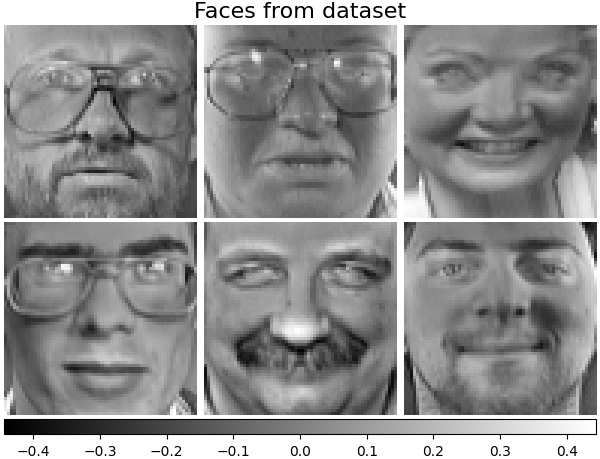
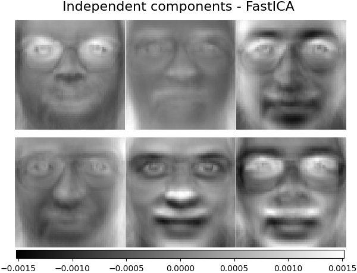
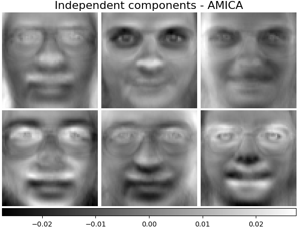

Note
Go to the end to download the full example code.
Faces dataset decompositions¶
Note
This example is adapted from the Scikit-Learn documentation.
Dataset preparation¶
Loading and preprocessing the Olivetti faces dataset.
import logging
import matplotlib.pyplot as plt
from numpy.random import RandomState
from sklearn import decomposition
from sklearn.datasets import fetch_olivetti_faces
rng = RandomState(0)
# Display progress logs on stdout
logging.basicConfig(level=logging.INFO, format="%(asctime)s %(levelname)s %(message)s")
faces, _ = fetch_olivetti_faces(return_X_y=True, shuffle=True, random_state=rng)
n_samples, n_features = faces.shape
# Global centering (focus on one feature, centering all samples)
faces_centered = faces - faces.mean(axis=0)
# Local centering (focus on one sample, centering all features)
faces_centered -= faces_centered.mean(axis=1).reshape(n_samples, -1)
print("Dataset consists of %d faces" % n_samples)
downloading Olivetti faces from https://ndownloader.figshare.com/files/5976027 to /home/circleci/scikit_learn_data
Dataset consists of 400 faces
Define a base function to plot the gallery of faces.
n_row, n_col = 2, 3
n_components = n_row * n_col
image_shape = (64, 64)
def plot_gallery(title, images, n_col=n_col, n_row=n_row, cmap=plt.cm.gray):
fig, axs = plt.subplots(
nrows=n_row,
ncols=n_col,
figsize=(2.0 * n_col, 2.3 * n_row),
facecolor="white",
constrained_layout=True,
)
fig.get_layout_engine().set(w_pad=0.01, h_pad=0.02, hspace=0, wspace=0)
fig.set_edgecolor("black")
fig.suptitle(title, size=16)
for ax, vec in zip(axs.flat, images):
vmax = max(vec.max(), -vec.min())
im = ax.imshow(
vec.reshape(image_shape),
cmap=cmap,
interpolation="nearest",
vmin=-vmax,
vmax=vmax,
)
ax.axis("off")
fig.colorbar(im, ax=axs, orientation="horizontal", shrink=0.99, aspect=40, pad=0.01)
plt.show()
Let’s take a look at our data. Gray color indicates negative values, white indicates positive values.
plot_gallery("Faces from dataset", faces_centered[:n_components])

Decomposition¶
Initialise different estimators for decomposition and fit each of them on all images and plot some results. Each estimator extracts 6 components as vectors \(h \in \mathbb{R}^{4096}\). We just displayed these vectors in human-friendly visualisation as 64x64 pixel images.
Independent components - FastICA¶
Independent component analysis separates a multivariate vectors into additive subcomponents that are maximally independent.
We instantiate amica.AMICA and call fit.
ica_estimator = decomposition.FastICA(
n_components=n_components, max_iter=400, whiten="arbitrary-variance", tol=15e-5
)
ica_estimator.fit(faces_centered)
plot_gallery(
"Independent components - FastICA", ica_estimator.components_[:n_components]
)

Independent components - AMICA¶
from amica import AMICA
amica_estimator = AMICA(n_components=n_components, max_iter=400, tol=15e-5)
amica_estimator.fit(faces_centered)
plot_gallery(
"Independent components - AMICA", amica_estimator.components_[:n_components]
)

/home/circleci/project/amica-python/src/amica/linalg.py:333: RuntimeWarning: invalid value encountered in sqrt
Winv = (eigvecs * np.sqrt(eigvals)) @ eigvecs.T # Inverse of the whitening matrix
Total running time of the script: (3 minutes 37.612 seconds)